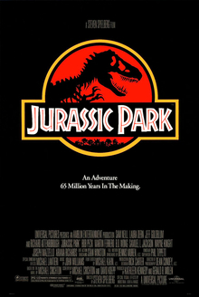

Fight Club

Fight Club is a 1999 American film directed by David Fincher and starring Brad Pitt, Edward Norton, and Helena Bonham Carter. It is based on the 1996 novel of the same name by Chuck Palahniuk. Norton plays the unnamed narrator, who is discontented with his white-collar job. He forms a "fight club" with soap salesman Tyler Durden (Pitt), and becomes embroiled in a relationship with a mysterious woman, Marla Singer (Bonham Carter).[5][6]
Palahniuk's novel was optioned by Fox 2000 Pictures producer Laura Ziskin, who hired Jim Uhls to write the film adaptation. Fincher was selected because of his enthusiasm for the story. He developed the script with Uhls and sought screenwriting advice from the cast and others in the film industry. It was filmed in and around Los Angeles from July to December 1998. He and the cast compared the film to Rebel Without a Cause (1955) and The Graduate (1967), with a theme of conflict between Generation X and the value system of advertising.[7][8]
Studio executives did not like the film, and they restructured Fincher's intended marketing campaign to try to reduce anticipated losses. Fight Club failed to meet the studio's expectations at the box office, and received polarized reactions from critics. It was ranked as one of the most controversial and talked-about films of the 1990s. The film later found commercial success with its home video release, establishing Fight Club as a cult classic and causing media to revisit the film. In 2009, on the tenth anniversary of the film's release, The New York Times dubbed it the "defining cult movie of our time.
Jurassic Park

Jurassic Park is a 1993 American science fiction film[4] directed by Steven Spielberg, produced by Kathleen Kennedy and Gerald R. Molen, and starring Sam Neill, Laura Dern, Jeff Goldblum, and Richard Attenborough. It is the first installment in the Jurassic Park franchise, and the first film in the Jurassic Park original trilogy, and is based on the 1990 novel of the same name by Michael Crichton and a screenplay by Crichton and David Koepp. The film is set on the fictional island of Isla Nublar, located off Central America's Pacific Coast near Costa Rica, where a wealthy businessman named John Hammond (Attenborough) and a team of genetic scientists have created a wildlife park of de-extinct dinosaurs. When industrial sabotage leads to a catastrophic shutdown of the park's power facilities and security precautions, a small group of visitors, including Hammond's grandchildren, struggle to survive and escape the now perilous island.
Before Crichton's novel was published, four studios put in bids for its film rights. With the backing of Universal Studios, Spielberg acquired the rights for $1.5 million before its publication in 1990. Crichton was hired for an additional $500,000 to adapt the novel for the screen. Koepp wrote the final draft, which left out much of the novel's exposition and violence, while making numerous changes to the characters. Filming took place in California and Hawaii from August to November 1992, and post-production lasted until May 1993, supervised by Spielberg in Poland as he filmed Schindler's List. The dinosaurs were created with groundbreaking computer-generated imagery by Industrial Light & Magic, and with life-sized animatronic dinosaurs built by Stan Winston's team. To showcase the film's sound design, which included a mixture of various animal noises for the dinosaur sounds, Spielberg invested in the creation of DTS, a company specializing in digital surround sound formats. The film was backed by an extensive $65 million marketing campaign, which included licensing deals with over 100 companies.
Jurassic Park premiered on June 9, 1993, at the Uptown Theater in Washington, D.C., and was released on June 11 in the United States. It went on to gross over $914 million worldwide in its original theatrical run,[5] becoming the highest-grossing film ever at the time, surpassing Spielberg's own E.T. The Extra-Terrestrial. This record was held until the release of Titanic in 1997.[6] It received very positive reviews from critics, who praised its special effects, sound design, and Spielberg's direction.[7] Following its 20th anniversary re-release in 2013, Jurassic Park became the oldest film in history to surpass $1 billion in ticket sales and the seventeenth overall. The film won over 20 awards, including three Academy Awards for its technical achievements in visual effects and sound design. In 2018, it was selected for preservation in the United States National Film Registry by the Library of Congress as being "culturally, historically, or aesthetically significant". The film was followed by five sequels - The Lost World: Jurassic Park (1997), Jurassic Park III (2001), Jurassic World (2015), Jurassic World: Fallen Kingdom (2018), and Jurassic World Dominion (2022).
Back to the Future

Back to the Future is a 1985 American science fiction film directed by Robert Zemeckis and written by Zemeckis, and Bob Gale. It stars Michael J. Fox, Christopher Lloyd, Lea Thompson, Crispin Glover, and Thomas F. Wilson. Set in 1985, it follows Marty McFly (Fox), a teenager accidentally sent back to 1955 in a time-traveling DeLorean automobile built by his eccentric scientist friend Emmett "Doc" Brown (Lloyd), where he inadvertently prevents his future parents from falling in love - threatening his own existence - and is forced to reconcile them and somehow get back to the future.
Gale and Zemeckis conceived the idea for Back to the Future in 1980. They were desperate for a successful film after numerous collaborative failures, but the project was rejected more than forty times by various studios because it was not considered raunchy enough to compete with the successful comedies of the era. A development deal was secured with Universal Pictures following Zemeckis's success directing Romancing the Stone (1984). Fox was the first choice to portray Marty but was unavailable; Eric Stoltz was cast instead. Shortly after principal photography began in November 1984, Zemeckis determined Stoltz was not right for the part and made the concessions necessary to hire Fox, including re-filming scenes already shot with Stoltz and adding $4 million to the budget. Back to the Future was filmed in and around California and on sets at Universal Studios, and concluded the following April.
After highly successful test screenings, the release date was brought forward to July 3, 1985, giving the film more time in theaters during the busiest period of the theatrical year. The change resulted in a rushed post-production schedule and some incomplete special effects. Back to the Future was a critical and commercial success, earning $381.1 million to become the highest-grossing film of 1985 worldwide. Critics praised the story, humorous elements, and the cast, particularly Fox, Lloyd, Thompson, and Glover. It received multiple award nominations and won an Academy Award, three Saturn Awards, and a Hugo Award. Its theme song, "The Power of Love" by Huey Lewis and the News, was also a success.
Back to the Future has since grown in esteem and is now considered by critics and audiences to be one of the greatest science-fiction films and among the best films ever made. In 2007, the United States Library of Congress selected it for preservation in the National Film Registry. The film was followed by two sequels, Back to the Future Part II (1989) and Back to the Future Part III (1990). Spurred by the film's dedicated fan following and effect on popular culture, Universal Studios launched a multimedia franchise, which now includes video games, theme park rides, an animated television series, and a stage musical. Its enduring popularity has prompted numerous books about its production, documentaries, and commercials.